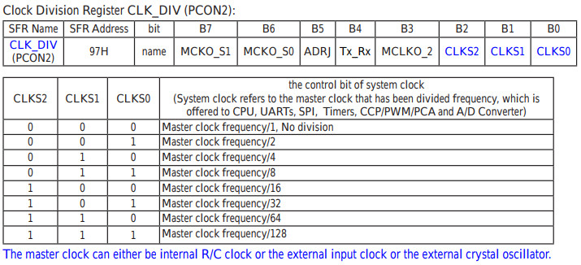

參考資訊：
http://plit.de/asem-51/
http://www.stcisp.com/stcisp620_off.html
https://sourceforge.net/projects/mcu8051ide/
STC15W104提供除頻功能，操作相當簡單，只要設定CLK_DIV暫存器即可

led .equ p3.2
.org 0h
jmp _start
.org 100h
_start:
clr a
loop:
inc a
anl a, #0fh
mov 97h, a
call blink_led
jmp loop
blink_led:
mov r2, #10
b0:
setb led
call delay
clr led
call delay
djnz r2, b0
ret
delay:
mov r0, #255
d0:
mov r1, #255
d1:
djnz r1, d1
djnz r0, d0
ret
.end
編譯程式：
$ mcu8051ide --compile main.s
完成